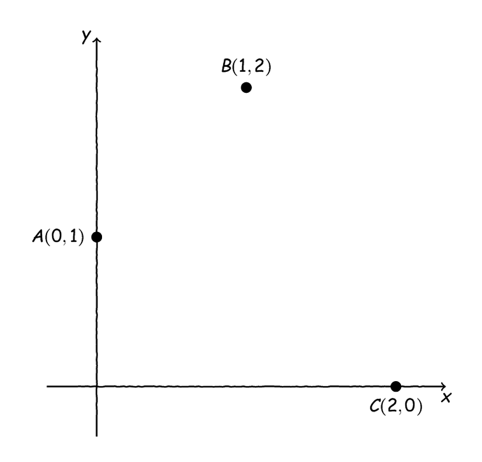
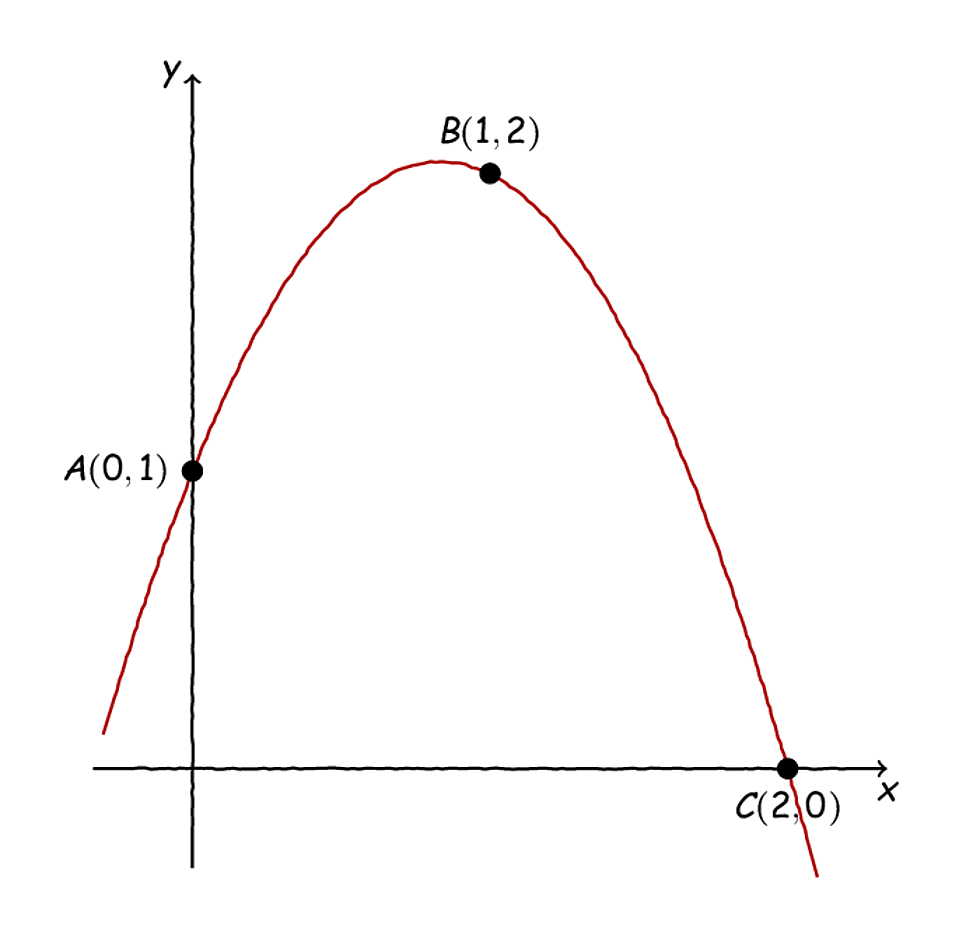
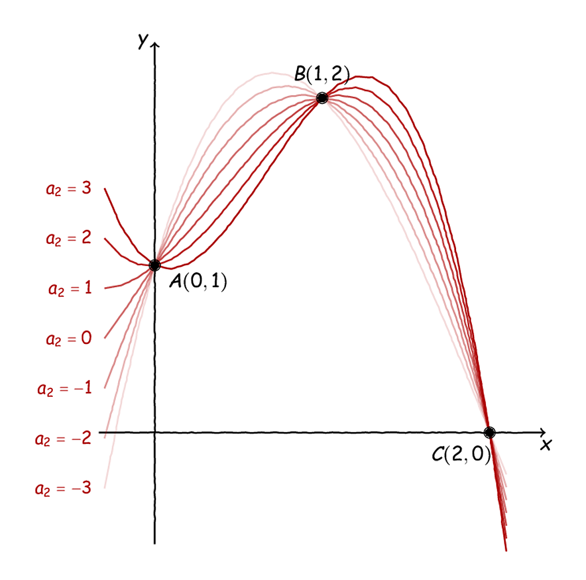

Ένα Αποτυχημένο Φύλλο Εργασίας#

Ο πίνακας Το στούντιό μου της Anna de Weert.#
Η μεγαλύτερη αλήθεια που θα ακούσει ή θα διαβάσει κανείς για τα μαθηματικά είναι ότι πρέπει να αποτύχεις 999 φορές για να επιτύχεις μία. Κι είναι λογικό αυτό, όταν μιλάμε για ένα από τα παλαιότερα γνωστικά αντικείμενα της ανθρωπότητας. Έτσι και σε αυτήν την ανάρτηση θα συζητήσουμε μία παταγώδη διδακτική αποτυχία. Γενικά, οι αποτυχίες είναι ίσως το πιο σημαντικό κομμάτι της ζωής μας, γιατί είναι η μόνη ίσως στιγμή που μπορούμε με σιγουριά να γνωρίζουμε ότι κάτι αληθεύει. Πράγματι, αν το καλοσκεφτούμε, τι άλλο μπορούμε να πούμε με σιγουριά πέρα από το «Αυτό δε δουλεύει»; Μόλις το είδαμε, άλλωστε, ότι δε δουλεύει.
Όπως και να έχει, ανεξάρτητα από τις όποιες φιλοσοφικές ανησυχίες περί βεβαιότητας των πεποιθήσεών μας, οι αποτυχίες μας είναι ίσως ο καλύτερος τρόπος για να εμβαθύνουμε σε ένα ζήτημα, καθώς έχουμε στα χέρια μας κάποιες επιβεβαιωμένα λάθος προσεγγίσεις. Έτσι κι εδώ, θα συζητήσουμε ένα φύλλο εργασίας το οποίο δεν πήγε καθόλου καλά - αρκετό καιρό πριν.
Το φύλλο εργασίας#
Αρχικά, ας παρουσιάσουμε το ίδιο το φύλλο εργασίας, το οποίο μπορείτε να βρείτε εδώ. Η πρόθεση του φύλλου εργασίας είναι να αναδείξει μία πρακτική εφαρμογή των πολυωνύμων, εστιάζοντας κυρίως σε κάποιες αλγεβρικές ιδιότητές τους. Για την ακρίβεια, παρουσιάζεται το ακόλουθο πρόβλημα (παράθεση από το φύλλο εργασίας):
Ο κύριος Σφιχτοχέρης είναι ο ιδιοκτήτης της μεγαλύτερης τράπεζας του Εδιμβούργου, και είναι ιδιαίτερα καχύποπτος και… σφιχτοχέρης. Για την ακρίβεια, είναι τόσο καχύποπτος που μόνον ο ίδιος γνωρίζει τον κωδικό ασφαλείας της πόρτας του θησαυροφυλακίου και, όποτε υπάρχει ανάγκη να ανοιχτεί, παρίσταται ο ίδιος και ανοίγει την πόρτα του. Αύριο όμως, για κακή του τύχη, χρειάζεται να γίνει απολύμανση σε όλους του χώρους της τράπεζας και ο ίδιος θα απουσιάζει σε ένα επαγγελματικό ταξίδι που δεν μπορεί να αναβληθεί. Αυτό, όπως καταλαβαίνετε, τον έχει αναστατώσει ιδιαιτέρως, αφού, πρέπει να εξουσιοδοτήσει κάποιον άλλο για να ανοίξει το θησαυροφυλάκιό του. ́Ομως, από τα πέντε (5) μέλη του Διοικητικού συμβουλίου της τράπεζας, κανένας δεν του «γεμίζει το μάτι», οπότε, του είναι αδύνατο να αποκαλύψει σε έναν από αυτούς τον κωδικό, μιας και είναι σχεδόν σίγουρο ότι, είτε την ίδια μέρα είτε κατά τη διάρκεια της απολύμανσης, αυτός που θα έχει τον κωδικό θα βρει και την ευκαιρία να «ξαφρίσει» το θησαυροφυλάκιο.
Έπειτα από αρκετή σκέψη, καταλήγει στο συμπέρασμα ότι μία ικανοποιητική λύση θα ήταν να αναγκάσει με κάποιον τρόπο και τους πέντε να βρίσκονται ταυτόχρονα στο θησαυροφυλάκιο, καθώς, έτσι, κανένας από τους πέντε δε θα νιώθει αρκετά άνετα να κλέψει υπό τον φόβο ότι οι υπόλοιποι θα τον προδώσουν, δεδομένου, επίσης, ότι δεν αλληλοσυμπαθούνται μεταξύ τους. Όμως δίνοντας, π.χ., στον καθένα ένα μόνο μέρος του κωδικού έτσι ώστε όλοι τους να πρέπει να είναι εκεί για να μπουν στο θησαυροφυλάκιο, θα τους αποκαλύψει και τον κωδικό στο σύνολό του, πράγμα που δυσαρεστεί ιδιαίτερα τον κύριο Σφιχτοχέρη. Η δουλειά σας, λοιπόν, είναι να βρείτε έναν τρόπο έτσι ώστε:
να μην αποκαλυφθεί ο κωδικός του θησαυροφυλακίου ούτε να υπάρχει προφανής τρόπος να τον «μαντέψουν»,
να μην αρκεί η παρουσία τεσσάρων ή λιγότερων μελών του Δ.Σ. για να ανοίξει η πόρτα, αλλά,
να είναι απαραίτητη η παρουσία και των πέντε μελών του Δ.Σ. έτσι ώστε να ανοίξει η πόρτα.
Να εξηγήσετε αναλυτικά πώς θα δουλεύει το σύστημα που θα σχεδιάσετε και γιατί αυτό ικανοποιεί τις τρεις παραπάνω προυποθέσεις. Θεωρήστε ότι ο κωδικός είναι κάποιος αριθμός με αρκετά ψηφία (άλλωστε, σε έναν υπολογιστή, όλα τα σύμβολα θα κωδικοποιούνταν σε αριθμούς).
Ωραία, το πρόβλημά μας, με την όποια κωμική του διάσταση, μοιάζει κάπως ρεαλιστικό. Θέλουμε να δώσουμε τη δυνατότητα σε κάποια άτομα να έχουν πρόσβαση όλα μαζί, ταυτόχρονα, στο θησαυροφυλάκιο, αλλά δε θέλουμε καθένα από αυτά μεμονωμένα ή κάποιο υποσύνολό τους να μπορεί να το πετύχει αυτό. Επίσης, όπως είναι λογικό, δε θέλουμε να αποκαλύψουμε τον ίδιον τον κωδικό του θησαυροφυλακίου, αλλά να τους δώσουμε έναν εναλλακτικό τρόπο να έχουν πρόσβαση σε αυτό γιʹ αυτήν την μία φορά που θα χρειαστεί να το ανοίξουν για να το απολυμάνουν.
Τα παραπάνω κάπως φαίνεται να στρέφουν το βλέμμα μας προς κάποιου είδους κωδικοποίηση που πρέπει να «ανακαλύψουμε». Για την ακρίβεια, μία αναμενόμενη, ίσως, σκέψη είναι να κωδικοποιήσουμε με κάποιον τρόπο τον κωδικό του θησαυροφυλακίου έτσι ώστε να μην τον αποκαλύψουμε στα πέντε μέλη του Δ.Σ. και, ταυτόχρονα, να «μοιράσουμε» κάπως αυτόν τον κωδικοποιημένο κωδικό έτσι ώστε να μην είναι εφικτό να μπορούν τέσσερα ή και λιγότερα μέλη του Δ.Σ. να ανοίξουν το θησαυροφυλάκιο. Κι εδώ αρχίζουν και φαίνονται τα πρώτα προβλήματα με το παρόν φύλλο εργασίας. Αλλά, πριν περάσουμε σε αυτά, ας δούμε λίγο ποια είναι η λύση που είχα κατά νου όταν σχεδίαζα το παραπάνω φύλλο - γιατί, ως τώρα, τα πολυώνυμα δεν έχουν φανεί καθόλου στον ορίζοντα.
Η «Ενδεικνυόμενη» Λύση#
Όπως είπαμε, αυτό που θέλουμε να κάνουμε είναι να κωδικοποιήσουμε τον κωδικό του θησαυροφυλακίου με τρόπο που να είναι απαραίτητη η παρουσία πέντε ατόμων (και όχι λιγότερων) για να ανοίξει η πόρτα του. Έστω, λοιπόν, \(c_0\) ο κωδικός του θησαυροφυλακίου ο οποίος, χωρίς βλάβη της γενικότητας, υποθέτουμε ότι είναι ένας θετικός ακέραιος αριθμός. Ένας τρόπος να τον κωδικοποιήσουμε είναι χρησιμοποιώντας ένα πολυώνυμο το οποίο π.χ., θα έχει τον \(c_0\) ως σταθερό όρο. Εναλλακτικά, μπορούμε να «μοιράσουμε» τον \(c_0\) με κάποιον εύλογο τρόπο στους συντελεστές ενός πολυωνύμου. Για παράδειγμα, αν ο \(c_0\) είναι 16ψήφιος, μπορούμε να τον σπάσουμε σε τέσσερις τετράδες και να φτιάξουμε 4 αριθμούς οι οποίοι να είναι και οι συντελεστές ενός πολυωνύμου τρίτου βαθμού.
Σαφώς, μπορούμε να βρούμε κι άλλους τρόπους, ίσως πιο ευφάνταστους, για να κωδικοποιήσουμε τον \(c_0\) μέσω ενός πολυωνύμου, αλλά η ιδέα είναι η ίδια: αντί να έχουμε στα χέρια μας τον \(c_0\) έχουμε ένα πολυώνυμο, \(p_0,\) που με κάποιον τρόπο αναπαριστά τον \(c_0.\) Η διαφορά ανάμεσα στο πολυώνυμο και τον «σκέτο» ακέραιο αριθμό είναι ότι μπορούμε να εκμεταλλευτούμε την ιδιαίτερη δομή του πρώτου έτσι ώστε να μην είναι εφικτό να ανοιχτεί το θησαυροφυλάκιο χωρίς απαρτία του Δ.Σ. Διότι, για παράδειγμα, για να καθορίσει κανείς πλήρως ένα πολυώνυμο τρίτου βαθμού, πρέπει να γνωρίζει (τουλάχιστον) τέσσερα διαφορετικά σημεία από τα οποία διέρχεται η γραφική του παράσταση. Πράγματι, ας πάρουμε, για αρχή, τα ακόλουθα τρία σημεία στο επίπεδο:
Αυτά τα τρία σημεία βρίσκονται στις εξής θέσεις σε ένα ορθοκανονικό σύστημα αξόνων:

Τρία αμέριμνα σημεία στο επίπεδο.#
Προφανώς, δεν υπάρχει ευθεία που να περνά και από τα τρία αυτά σημεία. Ωστόσο, υπάρχει ένα και μοναδικό τριώνυμο του οποίου η γραφική παράσταση να διέρχεται και από τα τρία αυτά σημεία, όπως φαίνεται στο παρακάτω σχήμα:

Ένα απλό τριώνυμο.#
Για να βρούμε την εξίσωση του παραπάνω τριωνύμου δεν έχουμε παρά να θεωρήσουμε πρώτα ένα (οποιοδήποτε) τριώνυμο:
Τώρα, αντικαθιστώντας τις συντεταγμένες των τριών παραπάνω σημείων παίρνουμε τρεις εξισώσεις:
Αντικαθιστώντας την πρώτη στις άλλες δύο παίρνουμε ένα μικρό και κομψό σύστημα δύο εξισώσεων με δύο αγνώστους:
Πολλαπλασιάζοντας την πρώτη επί δύο και αφαιρώντας κατά μέλη παίρνουμε την ακόλουθη εξίσωση:
Από εδώ, αντικαθιστώντας σε μία από τις δύο εξισώσεις του συστήματος βρίσκουμε και \(a_1=\frac{5}{2}\) συνεπώς το τριώνυμό μας είναι:
Τι γίνεται τώρα με πολυώνυμα μεγαλύτερου βαθμού; Για παράδειγμα, πόσα πολυώνυμα τρίτου βαθμού υπάρχουν που να περνούν από τα παραπάνω τρία σημεία;
Ας πάρουμε ένα πολυώνυμο τρίτου βαθμού:
Αντικαθιστώντας τις συντεταγμένες των τριών σημείων έχουμε:
Αντικαθιστώντας την πρώτη εξίσωση στις άλλες δύο έχουμε το εξής:
Πολλαπλασιάζοντας τώρα την πρώτη σχέση επί 2 και αφαιρώντας από τη δεύτερη έχουμε:
Τώρα, αν αντικαταστήσουμε το παραπάνω στη δεύτερη σχέση του αρχικού συστήματος, παίρνουμε:
Έτσι, μπορούμε να εκφράσουμε τις λύσεις του συστήματος ως εξής:
Με άλλα λόγια, ακριβώς επειδή μας λείπει μία εξίσωση σε σχέση με τους αγνώστους μας, δεν μπορούμε να καθορίσουμε πλήρως όλους τους συντελεστές του πολυωνύμου μας, με αποτέλεσμα οι επιλογές που έχουμε να είναι, συνολικά, άπειρες. Στο παρακάτω σχήμα έχουμε σχεδιάσει, ενδεικτικά, κάποια πολυώνυμα τρίτου βαθμού που διέρχονται και από τα τρία σημεία μας:

Λίγες περιπτώσεις των παραπάνω κυβικών πολυωνύμων.#
Αυτό, όπως φαντάζεστε - και μπορείτε να αποδείξετε - ισχύει και γενικότερα. Αν έχουμε n+1 σημεία, μπορούμε να καθορίσουμε πλήρως ένα πολυώνυμο βαθμού n ωστόσο κάθε μας προσπάθεια να καθορίσουμε ένα πολυώνυμο μεγαλύτερου βαθμού θα αποβαίνει άκαρπη, αφού θα πρέπει να προσδιορίσουμε περισσότερους συντελεστές από όσους μας επιτρέπουν τα σημεία που έχουμε στη διάθεσή μας. Εδώ, να σημειώσουμε ότι δεν μπορούμε να πάρουμε όποια n+1 σημεία θέλουμε, καθώς πρέπει όλα τους να έχουν διαφορετικές τετμημένες (διαφορετικά x, δηλαδή) καθώς μιλάμε για γραφικές παραστάσεις πολυωνυμικών συναρτήσεων, επομένως δεν μπορούν να διέρχονται από δύο σημεία στην ίδια κατακόρυφη ευθεία.
Αυτό μπορούμε να το διαβάσουμε και από την ανάποδη: αν δεν έχουμε τουλάχιστον n+1 σημεία (με διαφορετικές τετμημένες) δεν μπορούμε να καθορίσουμε μοναδικά ένα πολυώνυμο βαθμού n - ή μεγαλύτερου. Συνεπώς, με 5 σημεία δεν μπορούμε να καθορίσουμε ένα πολυώνυμο βαθμού 5 ή 6 ή 7 κ.λπ. ενώ μπορούμε να καθορίσουμε ακριβώς ένα (και μοναδικό) πολυώνυμο βαθμού 4. Με άλλα λόγια, φαίνεται κάπως φυσιολογικά τα πολυώνυμα να γενικεύουν αυτή την απλή ιδέα που έχουμε δει από την σχολική γεωμετρία: μία ευθεία καθορίζεται μοναδικά από δύο και μόνο σημεία. Αν δει κανείς την ευθεία ως τη γραφική παράσταση μίας πολυωνυμικής συνάρτησης πρώτου βαθμού (εντάξει, χάνουμε κάποιες ευθείες έτσι, αλλά δεν πειράζει), τότε αυτό συμφωνεί με τα όσα έχουμε πει παραπάνω.
Πίσω τώρα στους κωδικούς, τον κύριο Σφιχτοχέρη και τις τράπεζες, όλο αυτό πώς μπορεί να μας βοηθήσει; Δηλαδή, το γεγονός ότι για να καθορίσουμε πλήρως ένα πολυώνυμο βαθμού n χρειαζόμαστε n+1 σημεία, ενώ έστω κι ένα να μας λείπει δεν μπορούμε να το καθορίσουμε καθόλου - μα καθόλου, όμως - πώς θα μας βοηθήσει να μοιράσουμε τον κωδικό του θησαυροφυλακίου; Λοιπόν, αν καλοσκεφτείτε το πρόβλημά μας είναι ακριβώς αυτό: πώς θα μοιράσουμε σε 5 ανθρώπους μία πληροφορία έτσι ώστε να χρειάζονται και οι πέντε για να την ανακτήσουν και καθένας μόνος του να μην μπορεί. Επομένως, αυτό που ίσως θα μπορούσαμε να κάνουμε θα ήταν να πάρουμε τον κωδικό μας και να τον κρύψουμε, αρχικά, σε ένα πολυώνυμο. Για παράδειγμα, αν ο κωδικός μας είναι ο \(c_0=123\) τότε μπορούμε να φτιάξουμε ένα πολυώνυμου βαθμού 4 (βλέπετε γιατί;) με το \(c_0\) να είναι, ας πούμε, ο σταθερός του όρος. Για παράδειγμα:
Τώρα, διαλέγουμε 5 σημεία αυτού του πολυωνύμου, όποια νάʹναι, ίσως αποφεύγοντας εύλογα το \((0,123)\) , για παράδειγμα, τα εξής:
Στην περίπτωσή μας αυτά θα είναι:
Τώρα, με τρομερή αυτοπεποίθηση, μπορούμε να δώσουμε από ένα σημείο σε καθέναν από τους πέντε έμπιστους και κανείς τους μόνος του ή κάποιο (γνήσιο) υποσύνολό τους δε θα μπορεί να ανακτήσει το πολυώνυμο. Όλοι μαζί, όμως, θα μπορούν να βρουν το πολυώνυμο που έχουμε σκαρώσει και να βρουν και τον κωδικό.
Στην πραγματική της εφαρμογή, η παραπάνω μέθοδος, η οποία λέγεται η μέθοδος διαμοιρασμού μυστικού του Σαμίρ, χρησιμοποιεί διακριτά ανάλογα των πολυωνύμων, καθώς με ένα πολυώνυμο σαν το παραπάνω έχουμε θέματα όπως, π.χ., σφάλματα στρογγύλευσης, καθώς με κάθε στρογγυλοποίηση που κάνουμε χάνουμε ακρίβεια και άρα, από τα σημεία πίσω στο πολυώνυμο ίσως δε βρούμε το αρχικό μας πολυώνυμο.